电机控制之永磁同步电机矢量控制
此文讲解永磁同步电机的矢量控制，包括面装式、插入式以及内装式结构的永磁同步电机。先讲述各自的矢量方程式，以及电磁转矩方程式，最后讲述矢量控制系统。
参考书籍：《现代电机控制技术》第二版，王成元。
永磁同步电机分类
永磁同步电机（Permanent Magnet Synchronous Motor, PMSM）是由电励磁三相同步电机发展而来，使用永磁体代替了电励磁系统。矢量控制下的PMSM，要求永磁励磁场在气隙中为正弦分布，或者说在稳态运行时，能够在相绕组中产生正弦波感应磁场，这也是PMSM的基本特征。
PMSM的转子结构，按永磁体安装形式，可以分为面装式、插入式和内装式，如图1-1所示。
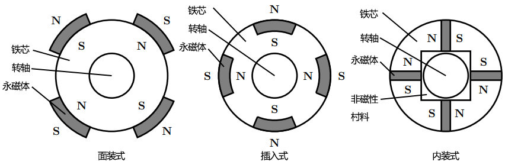
图1-2是两极面装式和插入式PMSM的结构简图。将绕组表示为位于轴线上的线圈，取 $A$ 轴为 $ABC$ 轴系的空间参考坐标轴，逆时针为正方向，并且作如下假设：
- 忽略定、转子铁芯磁阻，不计涡流和磁滞损耗；
- 永磁材料的电导率为零，永磁体内部的磁导率与空气相同；
- 转子上没有阻尼绕组；
- 永磁体产生的励磁磁场和三相绕组产生的电枢反应磁场在气隙中均为正弦分布；
- 稳态运行时，相绕组中感应电动势波形为正弦波。
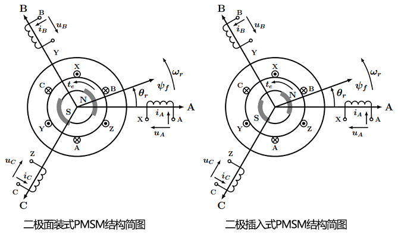
面装式物理模型
图1-3为两极面装式PMSM物理模型，因为假设永磁体磁导率与空气相同，故气隙均匀，长度为 $g$，则转子直轴等效励磁电感与交轴等效励磁电感相等（$L_{md} = L_{mq}$）。将永磁体等效为置于转子槽内的励磁绕组，其有效匝数为相绕组的 $\sqrt{3 \over 2}$ 倍，通入等效励磁电流 $i_f$，在气隙产生正弦分布的励磁磁场，且等效永磁励磁磁链为 $\psi_f = L_{mf} i_f$，$L_{mf}$ 为等效励磁电感。
因为 $i_s$ 和 $i_f$ 有效匝数相同且气隙均匀（$i_s$ 有效匝数说明，见中电流和电压矢量小节），则有 $L_{mf} = L_{md} = L_{mq}$。
面装式PMSM类似于电励磁三相隐极同电机，只是面装式PMSM永磁励磁磁场不可调节，而电励磁磁场可以调节。
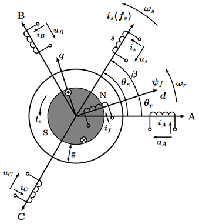
插入式物理模型
图1-4为两极插入式PMSM物理模型，因为假设永磁体磁导率与空气相同，铁芯相当于不是圆柱形了，故气隙不均匀，转子铁芯部分长度为 $g$，而永磁体部分气隙大于 $g$，则转子直轴等效励磁电感小于交轴等效励磁电感（$L_{md} < L_{mq}$）。将永磁体等效为置于转子槽内的励磁绕组，其有效匝数为相绕组的 $\sqrt{3 \over 2}$ 倍，通入等效励磁电流 $i_f$，在气隙产生正弦分布的励磁磁场，且等效永磁励磁磁链为 $\psi_f = L_{mf} i_f$，$L_{mf}$ 为等效励磁电感。
内装式PMSM同样有 $L_{md} < L_{mq}$，其物理模型和插入式PMSM基本相同。
插入式和内装式PMSM类似于电励磁三相凸极同步电机，只是凸极电机的 $L_{md} > L_{mq}$。
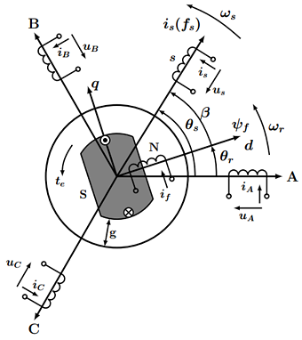
- 附： $L_{md}$ 和 $L_{mq}$ 的说明
铁芯磁阻忽略不计，气隙磁阻随着 $\beta$ 变化而变化：
当 $\beta = 0^\circ$时，定子绕组合成电流矢量$i_s$ 在气隙中产生的正弦分布磁场称为直轴电枢反应磁场，其等效励磁电感为 $L_{md}$；
当 $\beta = 90^\circ$时，定子绕组合成电流矢量$i_s$ 在气隙中产生的正弦分布磁场称为交轴电枢反应磁场，其等效励磁电感为 $L_{mq}$。
面装式永磁同步电机
矢量方程
在图1-3中，三相绕组电压矢量方程为：
$$
\boldsymbol{u_s}= R_s \boldsymbol{i_s} + {d \boldsymbol {\psi_s} \over dt}
{\tag {2-1}} {\label {2-1}}
$$
式中，$\boldsymbol {\psi_s}$ 为定子磁链，描述了三相绕组间的自感和互感、绕组与永磁体间的互感关系。且此式为三相绕组方程，对于面装式、插入式、内装式PMSM均适用。
式 ${\eqref {2-1}}$ 写成矩阵形式：
$$
\begin{bmatrix}
u_A \\
u_B \\
u_C \\
\end{bmatrix}
= R_s
\begin{bmatrix}
i_A \\
i_B \\
i_C \\
\end{bmatrix}
+
{d \over dt}
\begin{bmatrix}
\psi_A \\
\psi_B \\
\psi_C \\
\end{bmatrix}
{\tag {2-2}} {\label {2-2}}
$$
式中，$\psi_A, \; \psi_B, \; \psi_C$为三相绕组的全磁链，表达式为：
$$
\begin{bmatrix}
\psi_A \\
\psi_B \\
\psi_C \\
\end{bmatrix}
=
\begin{bmatrix}
L_A & L_{AB} & L_{AC} \\
L_{BA} & L_{B} & L_{BC} \\
L_{CA} & L_{CB} & L_{C} \\
\end{bmatrix}
\begin{bmatrix}
i_A \\
i_B \\
i_C \\
\end{bmatrix}
+
\begin{bmatrix}
\psi_{fA} \\
\psi_{fB} \\
\psi_{fC} \\
\end{bmatrix}
{\tag {2-3}} {\label {2-3}}
$$
式中，$\psi_{fA}, \psi_{fB}, \psi_{fC}$分别为永磁励磁场链过 $A,B,C$ 绕组产生的磁链；面装式永磁同步电机的气隙均匀，故三相绕组的自感、互感与转子位置无关，则自感和互感分别为：
$$
L_A = L_B = L_C = L_{s\sigma} + L_{ml} \\
L_{AB} = L_{BA} = L_{AC} = L_{CA} = L_{BC} = L_{CB} = L_{ml}cos120^\circ = -{\frac 1 2}L_{ml}
$$
式中，$L_{s\sigma}$ 和 $L_{ml}$ 分别为相绕组的漏磁电感和励磁电感。
以 $A$ 相绕组为例，可以得到 $\psi_A$ 的表达式如下：
$$
\psi_A = (L_{s\sigma} + L_{ml})i_A - {\frac 1 2}L_{ml}(i_B + i_C) + \psi_{fA}
{\tag {2-4}} {\label {2-4}}
$$
若定子三相绕组为 $Y$ 形联结，且无中性线引出，同有 $i_A + i_B + i_C = 0$，则式 $\eqref {2-4}$ 可化成：
$$
\begin{split}
\psi_A &= (L_{s\sigma} + {\frac 3 2}L_{ml})i_A + \psi_{fA} \\
&= (L_{s\sigma} + L_m)i_A + \psi_{fA} \\
&= L_s i_A + \psi_{fA}
\end{split}
{\tag {2-5}} {\label {2-5}}
$$
式中，$L_m = {\frac 3 2}L_{ml}$ 为等效励磁电感，$L_s = L_{s\sigma} + L_m$ 为同步电感。从而$\eqref {2-3}$可以写成：
$$
\begin{bmatrix}
\psi_A \\
\psi_B \\
\psi_C \\
\end{bmatrix}
=
L_s
\begin{bmatrix}
i_A \\
i_B \\
i_C \\
\end{bmatrix}
+
\begin{bmatrix}
\psi_{fA} \\
\psi_{fB} \\
\psi_{fC} \\
\end{bmatrix}
{\tag {2-6}} {\label {2-6}}
$$
由于定子磁链矢量和转子磁链矢量的合成表达式如下：
$$
\begin{split}
\boldsymbol {\psi_s} &= \sqrt{\frac 2 3}(\psi_A + a\psi_B + a^2 \psi_C) \\
\boldsymbol {\psi_f} &= \sqrt{\frac 2 3}(\psi_{fA} + a\psi_{fB} + a^2 \psi_{fC})
\end{split}
$$
则式$\eqref {2-6}$写成矢量形为：
$$
\begin{split}
\boldsymbol {\psi_s} &= L_{s\sigma} \boldsymbol{i_s} + L_m \boldsymbol{i_s} + \boldsymbol {\psi_f} \\
&= L_s \boldsymbol{i_s} + \boldsymbol {\psi_f}
\end{split}
{\tag {2-7}} {\label {2-7}}
$$
式$\eqref {2-7}$称为定子磁链矢量方程：
$L_{s\sigma}\boldsymbol{i_s}$ 为$\boldsymbol{i_s}$产生的漏磁磁链矢量，与定子相绕组漏磁场相对应；
$L_m \boldsymbol{i_s}$ 为 $\boldsymbol{i_s}$ 产生的励磁磁链矢量，与电枢反应磁场相对应；
$\boldsymbol {\psi_f}$ 为转子等效励磁绕组产生的励磁磁链矢量，与永磁体产生的励磁磁场相对应；
$L_s \boldsymbol{i_s}$ 为电枢磁链矢量，与电枢磁场相对应。
定子电流矢量产生的漏磁场和电枢反应磁场之和称为电枢磁场；
转子励磁磁场称为转子磁场，又称为主极磁场；电枢磁场与主极磁场之和为称定子磁场。
将式$\eqref {2-7}$ 代入式 $\eqref {2-1}$ 可以得到：
$$
\begin{split}
\boldsymbol{u_s} &= R_s \boldsymbol{i_s} + {d \boldsymbol {\psi_s} \over dt} \\
&= R_s \boldsymbol{i_s} + L_s {d \boldsymbol{i_s} \over dt} + {d \boldsymbol {\psi_f} \over dt}
\end{split}
{\tag {2-8}} {\label {2-8}}
$$
在图1-3中，$\boldsymbol{\psi_f}$ 在$ABC$ 轴系的空间相位角为 $\theta_r$，且 $\psi_f$ 值恒定（${\cfrac {d \psi_f} {dt}} = 0$），利用微分乘法法则，可以得到：
$$
\begin{split}
{d\boldsymbol{\psi_f} \over dt} = {d (\psi_f e^{j\theta_r}) \over dt} &= {d\psi_f \over dt} e^{j\theta_r} + \psi_f {d e^{j\theta_r} \over dt} \\
&= j \omega_r \boldsymbol{\psi_f}
\end{split}
{\tag {2-9}} {\label {2-9}}
$$
式$\eqref {2-9}$ 表明，转子等效励磁磁链矢量$\boldsymbol {\psi_f}$微分结果，即是 $\omega_r \boldsymbol{\psi_f}$ 逆时针旋转 $90^\circ$ 所得的矢量。因为 $j \omega_r \boldsymbol{\psi_f}$ 为转子磁场旋转产生的感应电动势，称为反电动势，则式$\eqref {2-8}$ 可以写成：
$$
\boldsymbol{u_s} = R_s \boldsymbol{i_s} + L_s {d \boldsymbol{i_s} \over dt} + j \omega_r \boldsymbol{\psi_f}
{\tag {2-10}} {\label {2-10}}
$$
式$\eqref {2-10}$ 的等效电路如图2-1所示：
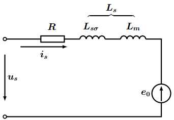
图中，反电动势设为 $\boldsymbol{e_0} = j \omega_r \boldsymbol{\psi_f}$。
同样，在正弦稳态下，$\boldsymbol{i_s}$ 幅值稳定，则有：
$$
L_s {d \boldsymbol{i_s} \over dt} = j \omega_s L_s \boldsymbol{i_s}
$$
所以，最后可以将式$\eqref {2-10}$ 写成：
$$
\boldsymbol{u_s} = R_s \boldsymbol{i_s} + j \omega_s L_s \boldsymbol{i_s} + j \omega_r \boldsymbol{\psi_f}
{\tag {2-11}} {\label {2-11}}
$$
由式$\eqref {2-7}$ 和式$\eqref {2-11}$ 可以得到图2-2所示的矢量图。
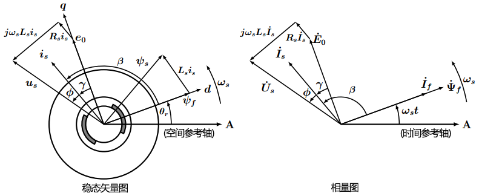
$\beta$ 为
转矩角；
$\gamma$ 为内功率因数角；
$cos\phi$ 为功率因数。
空间矢量和时间相量具有时空对应关系，同取 $A$ 轴为时间参考轴，空间相位与时间相位对应，在正弦稳态下，空间矢量的幅值为时间相量有效值的 $\sqrt{3}$ 倍，可以将矢量图转换为 $A$ 相绕的相量图，如图2-2中所示，相应的相量表达式为：
$$
\begin{split}
\dot{U}_s &= R_s \dot{I}_s + j \omega_s L_s \dot{I}_s + j \omega_r \dot{\Psi}_f \\
&= R_s \dot{I}_s + j \omega_s L_s \dot{I}_s + \dot{E}_0
\end{split}
{\tag {2-12}} {\label {2-12}}
$$
电磁转矩
根据所讲，隐极式三相同步电机的电磁转矩表达式为：
$$
t_e = p_0 \psi_f i_s sin\beta = p_0 \boldsymbol{\psi_f} \times \boldsymbol{i_s}
{\tag {2-13}} {\label {2-13}}
$$
此式同样适用于面装式PMSM，只是此时转子磁场不再是电励磁提供，而是由永磁体提供。
在正弦稳态下电机的电磁功率为：
$$
P_e = 3 E_0 I_s cos(\beta - 90^\circ) = 3 E_0 I_s cos \gamma
{\tag {2-14}} {\label {2-14}}
$$
插入式永磁同步电机
矢量方程
使用双反应（双轴）理论来分析插入式PMSM，将图1-4中插入式PMSM物理模型，表示为图3-1所示的同步旋转 $dp$ 轴系。图中，将图1-4中单轴线圈 $s$ 分解为 $dp$ 轴系上的双轴线圈 $d$ 和 $q$，每个线圈的有效匝数仍与单轴线圈 $s$ 相同，为三相绕组的 $\sqrt{\frac 3 2}$ 倍。
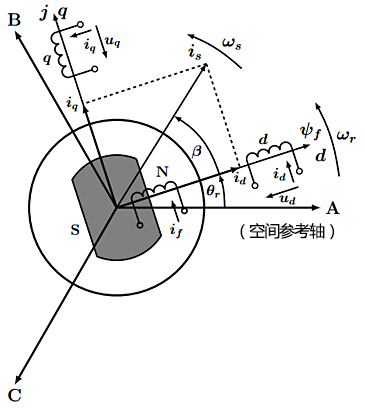
这样，在$dq$轴系内，定子电流矢量 $\boldsymbol{i_s^{dq}}$ 可以分解为：
$$
\boldsymbol{i_s^{dq}} = i_d + ji_q
{\tag {3-1}} {\label {3-1}}
$$
则 $i_d$ 和 $i_q$ 产生的电枢反应磁场磁链为：
$$
\begin{cases}
\psi_{md} = L_{md} i_d \\
\psi_{mq} = L_{mq} i_q \\
\end{cases}
{\tag {3-2}} {\label {3-2}}
$$
定子磁场在 $dp$ 轴方向上的分量分别为：
$$
\begin{cases}
\psi_d = L_d i_d + \psi_f \\
\psi_q = L_q i_q \\
\end{cases}
{\tag {3-3}} {\label {3-3}}
$$
式中，$L_d = L_{s\sigma} + L_{md}$ 为直轴同步电感，$L_q = L_{s\sigma} + L_{mq}$ 为交轴同步电感。而由于 $L_{mf} = L_{md}$，所以式$\eqref {3-3}$中的$\psi_d$ 还可以表示成 $\psi_d = L_d i_d + L_{md} i_f$。
在 $dp$ 轴系内定子磁链矢量$\boldsymbol{\psi_s^{dq}}$ 为：
$$
\boldsymbol{\psi_s^{dq}} = \psi_d + j\psi_q = L_d i_d + \psi_f + j L_q i_q
{\tag {3-4}} {\label {3-4}}
$$
而$dp$ 轴系在 $ABC$ 轴系中的空间相位角为 $\theta_r$，故利用旋转因子 $e^{j\theta_r}$，可得：
$$
\begin{split}
\boldsymbol{u_s} &= \boldsymbol{ u_s^{dq}} e^{j\theta_r} \\
\\
\boldsymbol{i_s} &= \boldsymbol{ i_s^{dq}} e^{j\theta_r} \\
\\
\boldsymbol {\psi_s} &= \boldsymbol {\psi_s^{dq}} e^{j\theta_r}
\end{split}
{\tag {3-5}} {\label {3-5}}
$$
将式$\eqref {3-5}$代入式$\eqref {2-1}$，可以得到 $dp$ 系内的电压矢量方程：
$$
\begin{split}
\boldsymbol{ u_s^{dq}} e^{j\theta_r} &= R_s \boldsymbol{ i_s^{dq}} e^{j\theta_r} + {d\boldsymbol {\psi_s^{dq}} e^{j\theta_r} \over dt} \\
&\Downarrow \\
\boldsymbol{ u_s^{dq}} &= R_s \boldsymbol{ i_s^{dq}} + {d\boldsymbol {\psi_s^{dq}} \over dt} + j\omega_r \boldsymbol{\psi_s^{dq}}
\end{split}
{\tag {3-6}} {\label {3-6}}
$$
将$\boldsymbol{ u_s^{dq}}, \boldsymbol{ i_s^{dq}}, \boldsymbol{\psi_s^{dq}} $的 $dq$ 轴系分量式，代入式$\eqref {3-6}$ 中可得：
$$
\begin{cases}
u_d = R_s i_d + {\cfrac {d\psi_d} {dt}} - \omega_r \psi_q \\
u_q = R_s i_q + {\cfrac {d\psi_q} {dt}} + \omega_r \psi_d
\end{cases}
{\tag {3-7}} {\label {3-7}}
$$
将式$\eqref {3-3}$代入式$\eqref {3-7}$，可得：
$$
\begin{cases}
u_d = R_s i_d + L_d {\cfrac {d i_d} {dt}} - \omega_r L_q i_q \\
u_q = R_s i_q + L_q {\cfrac {d i_q} {dt}} + \omega_r (L_d i_d + \psi_f)
\end{cases}
{\tag {3-8}} {\label {3-8}}
$$
在正弦稳态下，因为 $i_d$ 和 $i_q$ 恒定，则式$\eqref {3-8}$ 可以写成：
$$
\begin{cases}
u_d = R_s i_d - \omega_r L_q i_q \\
u_q = R_s i_q + \omega_r L_d i_d + \omega_r \psi_f
\end{cases}
{\tag {3-9}} {\label {3-9}}
$$
此时有 $\omega_r = \omega_s$，$\omega_s$ 为电源角频率。用感应电动势 $e_0$ 来表示 $\omega_r \psi_f$，将式$\eqref {3-9}$ 改写成：
$$
\begin{cases}
u_d = R_s i_d - \omega_s L_q i_q \\
ju_q = jR_s i_q + j\omega_s L_d i_d + je_0
\end{cases}
{\tag {3-10}} {\label {3-10}}
$$
可以得到 $ABC$ 轴系下插入式PMSM的电压矢量方程为：
$$
\boldsymbol{u_s} = R_s \boldsymbol{i_s} + j\omega_s L_d i_d - \omega_s L_q i_q + \boldsymbol{e_0}
{\tag {3-11}} {\label {3-11}}
$$
若有$L_{md} = L_{mq}$，即$L_d = L_q = L_s$，则通过：
$$
j\omega_s L_d i_d - \omega_s L_q i_q = j\omega_s L_s (i_d + j i_q) = j\omega_s L_s \boldsymbol{i_s}
$$式$\eqref {3-11}$ 即可转化成式$\eqref {2-11}$所示的面装式PMSM的电压矢量方程。所以式$\eqref{3-7}$、$\eqref{3-8}$、$\eqref{3-9}$、$\eqref{3-10}$、$\eqref{3-11}$同样可以用于面装式PMSM。
插入式和内装式物理模型基本相同，故式$\eqref {3-11}$ 对插入式、内装式PMSM均适用。由式$\eqref {3-4}$和式$\eqref {3-11}$，可得插入式和内装式PMSM的稳态矢量图，如图3-2所示。
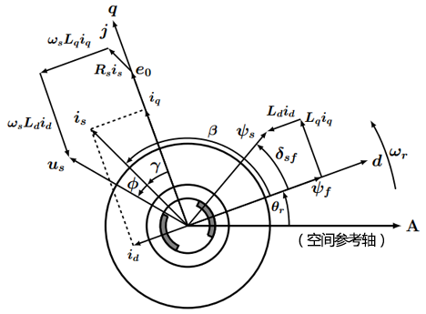
电磁转矩
根据所讲，凸极式三相同步电机的电磁转矩表达式为：
$$
t_e = p_0[\psi_f i_s sin\beta + {\frac 1 2} (L_d - L_q)i_s^2sin2\beta]
{\tag {3-12}} {\label {3-12}}
$$
此式同样适用于插入式、内装式PMSM，只是此时转子磁场不再是电励磁提供，而是由永磁体提供。对于插入式和内装式有$L_d < L_q$。图3-3为$t_e-\beta$ 特性曲线。
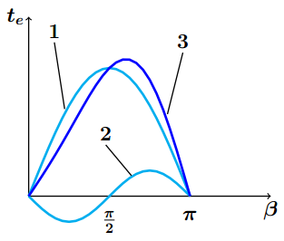
曲线1为励磁转矩；
曲线2为磁阻转矩；
曲线3为合成转矩。
从图中可看出：
当 $0 < \beta < {\pi \over 2}$时，磁阻转矩为负值，具有制动性质；
当 ${\pi \over 2} < \beta < \pi$时，磁阻转矩为正值，具有驱动性质，控制 $\beta$ 在此范围可以提高转矩值；
在图3-1中的$dp$ 轴系中有：
$$
\begin{cases}
i_d = i_s cos \beta \\
i_q = i_s sin \beta
\end{cases}
{\tag {3-13}} {\label {3-13}}
$$
将式$\eqref {3-13}$ 代入式$\eqref {3-12}$ 可得：
$$
t_e = p_0[\psi_f i_q + (L_d - L_q)i_d i_q]
{\tag {3-14}} {\label {3-14}}
$$
式$\eqref {3-14}$ 可以表示成：
$$
t_e = p_0(\psi_d + j\psi_q)(i_d + j i_q) = p_0 \boldsymbol{\psi_s} \times \boldsymbol{i_s}
{\tag {3-15}} {\label {3-15}}
$$
式$\eqref {3-15}$和式$\eqref {2-13}$的电磁转矩表达式相同，说明矢量叉乘形式的电磁转矩表达式，对于面装式、插入式、内装式PMSM均适用。
反过来说，$\eqref{3-12}$和$\eqref{2-13}$等电磁转矩表达式，都是由式$\eqref{3-15}$推导而来。
PMSM模型总结
| PMSM | 面装式 | 插入式、内装式 |
|---|---|---|
| 基本方程 | $\boldsymbol{u_s} = R_s\boldsymbol{i_s} + \cfrac{d\boldsymbol {\psi_s}}{dt}$ | $\boldsymbol{u_s} = R_s\boldsymbol{i_s} + \cfrac{d\boldsymbol {\psi_s}}{dt}$ |
| 同步电感 | $L_s = L_d = L_q$ | $L_{md} < L_{mq}$ |
| 数学模型 | $\boldsymbol{u_s} = R_s \boldsymbol{i_s} + L_s \cfrac{d \boldsymbol{i_s}}{dt} + \cfrac{d \boldsymbol {\psi_f}}{dt}$ | $u_d = R_s i_d + {\cfrac {d\psi_d} {dt}} - \omega_r \psi_q$ $u_q = R_s i_q + \cfrac{d\psi_q} {dt} + \omega_r \psi_d $ |
| 转矩方程 | $t_e = p_0 \psi_f i_s sin\beta = p_0 \psi_f i_q$ | $t_e = p_0[\psi_f i_q + (L_d - L_q)i_d i_q]$ |
矢量控制初步
这里初步介绍一下矢量控制的基本过程。
转矩与励磁
将$dp$ 轴系的 $d$ 轴与永磁体励磁磁链 $\psi_f$ 方向重合，或者说 $dp$ 轴系沿转子磁场方向定向，称之为
转子磁场定向。后面的 $dq$ 轴系均基于此磁场定向。
在 $dp$ 轴系中，可以通过控制分量 $i_d, \; i_q$，来控制电流矢量 $\boldsymbol{i_s}$ 幅值与空间相位，这对于面装式、插入式、内装式PMSM都是可行的。从而，面装式PMSM电磁转矩式$\eqref {2-13}$可以表示成：
$$
t_e = p_0 \psi_f i_s sin\beta = p_0 \psi_f i_q
{\tag {4-1}} {\label {4-1}}
$$
式$\eqref {4-1}$表明，$i_q$ 可以控制电磁转矩（面装式PMSM电磁转矩全为励磁转矩），同样式$\eqref {3-14}$ 表明 $i_q$ 可以控制电磁转矩中的励磁转矩部分，故 $i_q$ 称为转矩电流。当控制 $\beta = 90^\circ \; (i_d = 0)$ 时，定子电流 $i_s$ 全部为转矩电流。
PMSM使用永磁体作为转子，故转子励磁不可调节，但是可以调节电枢反应磁场；而直轴反应磁场与永磁体磁场方向共线，与永磁励磁可以相互消长，交轴反应磁场与永磁体磁场垂直，与永磁励磁的互相消长很小。
对于式$\eqref {3-3}$ 中的直轴磁场磁链 $\psi_d$ 为：
$$
\psi_d = L_d i_d + \psi_f \\
{\tag {4-2}} {\label {4-2}}
$$
当 $i_d < 0$ 时，直轴电枢反应磁场与永磁励磁磁场方向相反，即减弱了直轴磁场。这样可以通过控制 $i_d$ 来控制直轴磁场，将 $i_d$ 称为励磁电流。
注意：此处我对于励磁电流$i_d$的理解不够严谨。
综上，因为 $dq$ 轴磁场间不存在耦合，所以通控制 $i_d$ 和 $i_q$ 可以分别独立地控制励磁和转矩，实现了两种控制间的解耦。若是直接控制 $i_A, i_B, i_C$，励磁和转矩都会同时受到影响。
耦合与解耦：
一个系统由如下数学模型(方程组)描述，
$$
\begin{cases}
y_1 = fa(x_1, x_2) \\
y_2 = fb(x_1, x_2)
\end{cases}
$$
其中，$x_1,x_2$ 是不同的输入变量，可以控制不同的输出 $y_1,y_2$，从而控制整个系统。
可以看到，不管哪个输入变量变动，2个输出变量都会受到影响，这即是一种耦合，系统内部多个体系相互影响。
解耦就是通过选取控制量，坐标变换等手段，将多变量系统，变成单变量控制系统：
$$
\begin{cases}
y_1’ = fx(x_1’) \\
y_2’ = fy(x_2’)
\end{cases}
$$
这样，每个输出都只由一个变量控制，但同样可以描述整个系统，并对整个系统进行控制。
坐标与矢量变换
电流分量 $i_d$ 和 $i_q$ 都是我们建模过程中所建立的物理量，但最终对PMSM的控制，最终还是要通过输出电流 $i_A, i_B, i_C$ 或电压 $u_A, u_B, u_C$ 来执行。
将控制量 $i_d$ 和 $i_d$ 转化成 $i_A, i_B, i_C$ 来输出，可以通过以下变换：
- Clarke变换
$$
\begin{bmatrix}
i_\alpha \\
i_\beta \\
\end{bmatrix}
=
\sqrt{2 \over 3}
\begin{bmatrix}
1 &-{\frac 1 2} &-{\frac 1 2} \\
0 &{\frac {\sqrt{3}} 2} &-{\frac {\sqrt{3}} 2} \\
\end{bmatrix}
\begin{bmatrix}
i_A \\
i_B \\
i_C \\
\end{bmatrix}
{\tag {4-3}} {\label {4-3}}
$$
$\sqrt{2 \over 3}$ 也可换成 ${2 \over 3}$；
$\sqrt{2 \over 3}$ 可以保证功率不变；而${2 \over 3}$ 可以保证合成空间矢量在A,B,C轴上的投影分别等于三相变量的瞬时值。
式中，$i_\alpha$ 和 $i_\beta$ 满足$ \boldsymbol{i_s} = i_\alpha + j i_\beta $。这里$\boldsymbol{i_s}$也可以为其它空间矢量，同样满足变换。
- Park变换
$$
\begin{bmatrix}
i_d \\
i_q \\
\end{bmatrix}
=
\begin{bmatrix}
cos\theta_r &sin\theta_r \\
-sin\theta_r &cos\theta_r \\
\end{bmatrix}
\begin{bmatrix}
i_\alpha \\
i_\beta \\
\end{bmatrix}
{\tag {4-4}} {\label {4-4}}
$$
以上Clarke和Park变换只是一种坐标变换关系，同样适用于电压、磁动势等空间矢量。
矢量控制过程
对电流 $i_A, i_B, i_C$ 和电压 $u_A, u_B, u_C$ 的控制，是矢量控制的控制输出；对电流$i_d, i_q$ 的控制，是矢量控制的控制方法；而Clarke和Park变换，则是控制输出与控制方法间的桥梁。
这里以 $i_d = 0$ 的电流控制方法，来初步的介绍一下矢量控制的过程。由于 $i_d = 0$，则 $\boldsymbol{i_s}$ 与 $\boldsymbol{\psi_f}$的夹角 $\beta=90^\circ$，故面装式、插入式和内装式的转矩均为：
$$
t_e = p_0 \psi_f i_s = p_0 \psi_f i_q
{\tag {4-5}} {\label {4-5}}
$$
空间矢量图如图4-1所示。
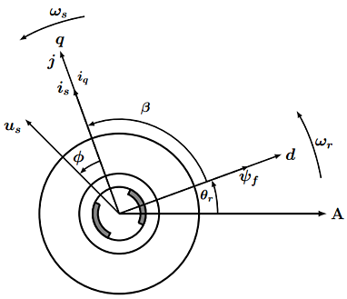
转矩角$\beta = \cfrac{\pi}{2}$
$i_d = 0$ 的电流控制方法，即使得定子绕组合电流矢量$i_s$，始终超前永磁体励磁磁链$\psi_f$ $90^\circ$，获得最大转矩。而在的电磁转矩的控制小节，讲了电动机拖动系统方程为：
$$
t_e = J {d\Omega_r \over dt} + R_\Omega \Omega_r + t_L
{\tag {4-6}} {\label {4-6}}
$$
由式$\eqref {4-5}$可知：对电流 $i_q$的控制，即是对转矩$t_e$的控制；
由式$\eqref {4-6}$可知：对转矩 $t_e$的控制，即是对转速 $\Omega_r$ 的控制。
故通过对 $i_q$ 调节，即可调节转速，反之，以转速为反馈量，则可以计算出应输出的电流 $i_q$ 的值。由此，可以得到矢量控制系统的基本模块和控制的大致流程，如图4-2所示。
以转速 $n$ 为反馈量，可以计算出应当输出的电流 $i_q$ 的值；
以由电流 $i_A, i_B, i_C$ 变换来的 $i_d, i_q$ 为反馈量，可以计算最终输出的电流 $i_d ^*, i_q ^* $；
而实际输入到逆变模块的电流 $i_A^*, i_B^*, i_C^*$，则是通过对$i_d ^*, i_q ^* $ 进行逆变换而来。
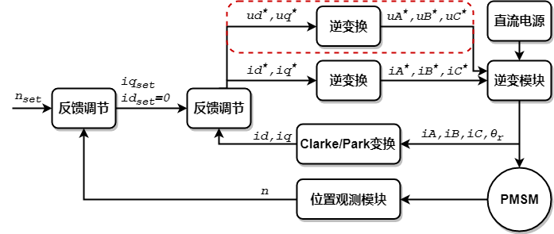
若要通过控制电压 $u_A, u_B, u_C$ 输出，来控制电机，可以直接通过反馈调节，将电流变换后得到的 $i_d,i_q$ 作为反馈值，与期望值进行比较，直接输出电压 $u_d ^*, u_q ^* $（如图4-2中的虚线框）。
转载请注明来源，欢迎对文章中的引用来源进行考证，欢迎指出任何有错误或不够清晰的表达。可以在下面评论区评论，也可以邮件至 [ yehuohan@gmail.com ]
文章标题:电机控制之永磁同步电机矢量控制
本文作者:z000tech
发布时间:2017-07-17, 14:34:46
最后更新:2018-04-12, 10:26:33
原始链接:http://yehuohan.github.io/2017/07/17/笔记/Motor/电机控制之永磁同步电机矢量控制/版权声明: "署名-非商用-相同方式共享 4.0" 转载请保留原文链接及作者。